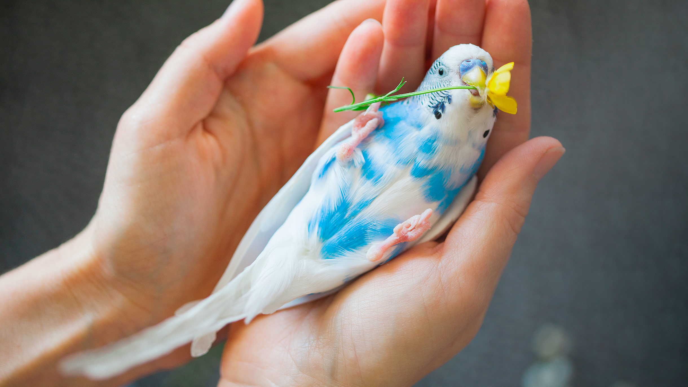

волнистик
Волнистые попугаи могут поворачивать голову на 180 градусов. У попугайчиков очень хорошее зрение и слух. Они видят мир в цвете, с очень широким углом обзора и могут слышать звуки в диапазоне от 400-20.000 Герц. Волнистые попугаи способны имитировать звуки, человеческую речь и голоса других животных. у меня есть волнистик . жёлтый очень инергичный.
пение волнистика
подробно о поватках попугайчиков
<>Это маленькие, живущие на земле попугаи, которые хорошо маскируются благодаря зелёному цвету оперения. Своё название получили в связи с тем, <>что обитают в нижнем ярусе леса, где быстро бегают по земле, разыскивая корм в лесной подстилке и разгребая её примерно так же, как это делают домашние куры.Однако какарики отнюдь не утратили способности к активному полёту — они умеют летать, резко меняя в полете направление и ловко огибая препятствия.[5]
И хотя эти птицы предпочитают передвигаться «пешком», при содержании в домашних условиях им необходимо предоставлять возможность летать примерно по 4 часа в день, обеспечив при этом пернатым питомцам безопасность.[6]
навиди на картинку :)